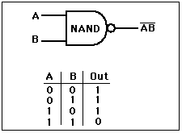

NAND Gate
The output is high when either of inputs A or B is high, or if neither is high. In other words, it is normally high, going low only if both A and B are high.
|

| The NAND gate and the NOR gate can be said to be universal gates since combinations of them can be used to accomplish any of the basic operations and can thus produce an inverter, an OR gate or an AND gate. The non-inverting gates do not have this versatility since they can't produce an invert.
|
|
Index
Electronics concepts
Digital Circuits |